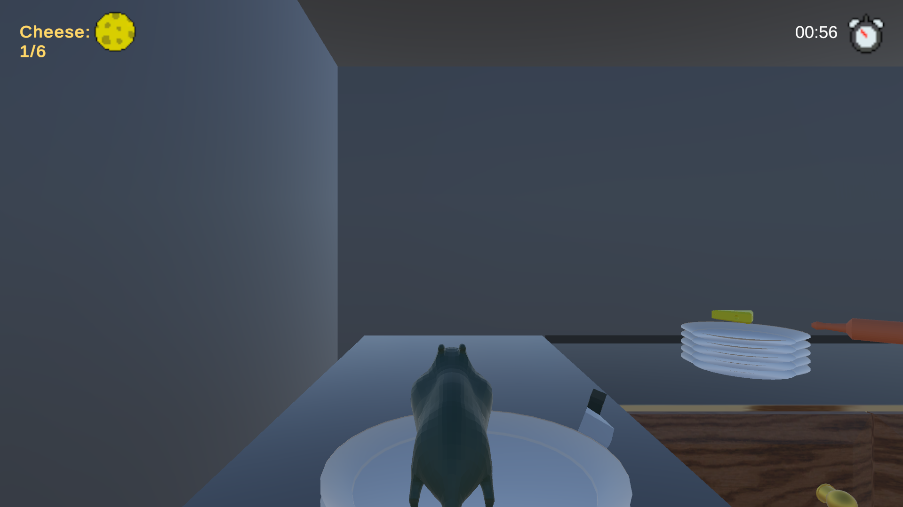
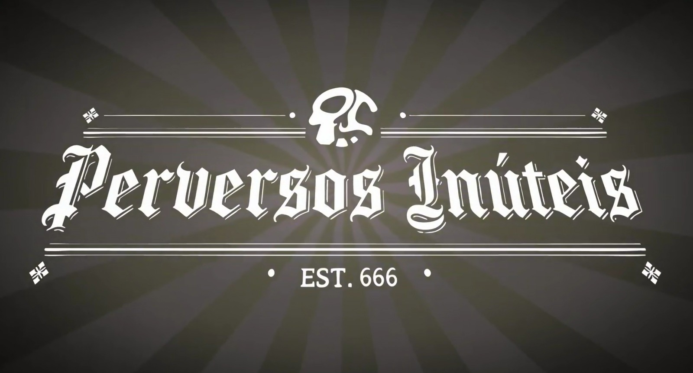

Gourmet en Fuite
Nesse projeto com 3 níveis fiz 3 músicas diferentes porém com loops parecidos apenas organizados de forma diferente.
Game Developer | Produção de Música e SFX para Jogos
Sou desenvolvedor de jogos com foco na produção de áudio para games, incluindo trilhas sonoras e efeitos sonoros (SFX). Trabalho com ferramentas de desenvolvimento como Reaper e Soundtrap e tenho interesse em como o áudio contribui para a imersão e experiência do jogador.

Nesse projeto com 3 níveis fiz 3 músicas diferentes porém com loops parecidos apenas organizados de forma diferente.

Jogo de Terror fofo cooperativo do qual os jogadores devem passar por fases para encontrar sua primeira vitima.
Alguns exemplos de trilhas sonoras e efeitos sonoros produzidos para projetos de jogos.
Trilha sonora criada para um jogo onde você controla um rato pegando queijo pela cozinha enquanto desvia de obstáculos.
Segunda trilha sonora do jogo, mantendo a identidade musical mas com variações na organização dos loops.
Musica para um jogo de terror engraçado em um mapa de acampamento.
Musica para um jogo de terror engraçado em um mapa de cemitério.
Musica de Main Menu para um jogo de terror engraçado.
Email: biel.grassi.bg@gmail.com